Last updated: 2026-03-25
Checks: 6 1
Knit directory: dickinson_power/
This reproducible R Markdown analysis was created with workflowr (version 1.7.2). The Checks tab describes the reproducibility checks that were applied when the results were created. The Past versions tab lists the development history.
The R Markdown file has unstaged changes. To know which version of
the R Markdown file created these results, you’ll want to first commit
it to the Git repo. If you’re still working on the analysis, you can
ignore this warning. When you’re finished, you can run
wflow_publish to commit the R Markdown file and build the
HTML.
Great job! The global environment was empty. Objects defined in the global environment can affect the analysis in your R Markdown file in unknown ways. For reproduciblity it’s best to always run the code in an empty environment.
The command set.seed(20260107) was run prior to running
the code in the R Markdown file. Setting a seed ensures that any results
that rely on randomness, e.g. subsampling or permutations, are
reproducible.
Great job! Recording the operating system, R version, and package versions is critical for reproducibility.
Nice! There were no cached chunks for this analysis, so you can be confident that you successfully produced the results during this run.
Great job! Using relative paths to the files within your workflowr project makes it easier to run your code on other machines.
Great! You are using Git for version control. Tracking code development and connecting the code version to the results is critical for reproducibility.
The results in this page were generated with repository version d535956. See the Past versions tab to see a history of the changes made to the R Markdown and HTML files.
Note that you need to be careful to ensure that all relevant files for
the analysis have been committed to Git prior to generating the results
(you can use wflow_publish or
wflow_git_commit). workflowr only checks the R Markdown
file, but you know if there are other scripts or data files that it
depends on. Below is the status of the Git repository when the results
were generated:
Ignored files:
Ignored: .DS_Store
Ignored: .Rhistory
Ignored: .Rproj.user/
Ignored: analysis/.DS_Store
Ignored: analysis_to-fix/.DS_Store
Ignored: data/.DS_Store
Ignored: data/FY25 Main Meter Data.xlsx
Ignored: data/building_list_FY25_updated.xlsx
Ignored: data/graph_data_life_exp.csv
Ignored: data/housing_counts.csv
Ignored: keys/.DS_Store
Ignored: output/annual_kwh.csv
Ignored: output/building_check.csv
Ignored: output/building_check.xlsx
Ignored: output/daily_kwh.csv
Ignored: output/kwh_academic_2026-03-16.csv
Ignored: output/kwh_academic_2026-03-17.csv
Ignored: output/kwh_academic_2026-03-18.csv
Ignored: output/kwh_academic_2026-03-22.csv
Ignored: output/kwh_academic_2026-03-23.csv
Ignored: output/kwh_annual.csv
Ignored: output/kwh_annual_2026-03-04.csv
Ignored: output/kwh_annual_2026-03-12.csv
Ignored: output/kwh_annual_2026-03-16.csv
Ignored: output/kwh_annual_2026-03-17.csv
Ignored: output/kwh_annual_2026-03-18.csv
Ignored: output/kwh_annual_2026-03-22.csv
Ignored: output/kwh_annual_2026-03-23.csv
Ignored: output/kwh_annual_20260225.csv
Ignored: output/kwh_annual_20260226.csv
Ignored: output/kwh_daily.csv
Ignored: output/kwh_daily_2026-03-04.csv
Ignored: output/kwh_daily_2026-03-12.csv
Ignored: output/kwh_daily_2026-03-16.csv
Ignored: output/kwh_daily_2026-03-17.csv
Ignored: output/kwh_daily_2026-03-18.csv
Ignored: output/kwh_daily_2026-03-22.csv
Ignored: output/kwh_daily_2026-03-23.csv
Ignored: output/kwh_daily_20260225.csv
Ignored: output/kwh_daily_20260226.csv
Ignored: output/kwh_main_annual.csv
Ignored: output/kwh_main_daily.csv
Unstaged changes:
Modified: analysis/main_meter_regression.Rmd
Note that any generated files, e.g. HTML, png, CSS, etc., are not included in this status report because it is ok for generated content to have uncommitted changes.
These are the previous versions of the repository in which changes were
made to the R Markdown (analysis/main_meter_regression.Rmd)
and HTML (docs/main_meter_regression.html) files. If you’ve
configured a remote Git repository (see ?wflow_git_remote),
click on the hyperlinks in the table below to view the files as they
were in that past version.
| File | Version | Author | Date | Message |
|---|---|---|---|---|
| Rmd | d535956 | maggiedouglas | 2026-03-23 | update main meter regression example |
| html | d535956 | maggiedouglas | 2026-03-23 | update main meter regression example |
| Rmd | 0e3911f | maggiedouglas | 2026-03-23 | update data wrangling and add model tab and main meter regression example |
| html | 0e3911f | maggiedouglas | 2026-03-23 | update data wrangling and add model tab and main meter regression example |
| Rmd | 593611e | maggiedouglas | 2026-03-20 | developed main meter regression |
| html | 593611e | maggiedouglas | 2026-03-20 | developed main meter regression |
What is the relationship between electricity use and outdoor temperature for buildings on the main meter?
The below analysis provides an example of how to use linear regression to shed light on this question.
library(tidyverse)
library(segmented) # for segmented regression
library(tseries) # for time series, including autocorrelation
library(moderndive)
daily <- read.csv("./output/kwh_daily_2026-03-23.csv", strip.white = TRUE)
daily_main <- daily %>%
filter(NAME == "Main Meter")
str(daily_main)'data.frame': 365 obs. of 10 variables:
$ type : chr "Main Meter" "Main Meter" "Main Meter" "Main Meter" ...
$ meter : chr "Main Meter - Total" "Main Meter - Total" "Main Meter - Total" "Main Meter - Total" ...
$ NAME : chr "Main Meter" "Main Meter" "Main Meter" "Main Meter" ...
$ days_perc: num 100 100 100 100 100 100 100 100 100 100 ...
$ sqft : int 1119435 1119435 1119435 1119435 1119435 1119435 1119435 1119435 1119435 1119435 ...
$ occupants: num NA NA NA NA NA NA NA NA NA NA ...
$ period : chr "Summer Break" "Summer Break" "Summer Break" "Summer Break" ...
$ date : chr "2024-07-01" "2024-07-02" "2024-07-03" "2024-07-04" ...
$ kwh : num 33919 35412 38561 42526 45794 ...
$ ave_temp : int 69 73 78 81 84 86 84 84 86 87 ...Let’s start by looking at our data. For now we will do some quick-and-dirty graphs using ggplot.
The graph shows that the relationship is definitely not linear! Instead it appears V-shaped. Electricity use decreases from cold temperatures until around 60 degrees F, and then increases with temperature beyond that point. The increase in electricity use above 60 degrees F is more pronounced than the decrease with temperature at temperatures below 60 degrees F.
If we examine the relationship only at temperatures of 60 degrees F and above, it appears that the relationship is roughly linear.
# where is the break point?
ggplot(daily_main, aes(x = ave_temp, y = kwh)) +
geom_point() +
theme_bw() +
geom_vline(xintercept = 60, col = "blue", linetype = "dashed")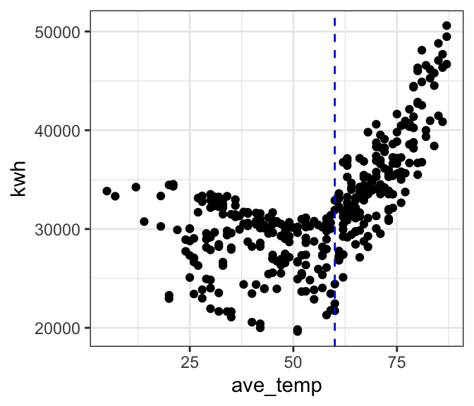
# let's look at only cooling temps
ggplot(filter(daily_main, ave_temp > 60),
aes(x = ave_temp, y = kwh)) +
geom_point() +
theme_bw() 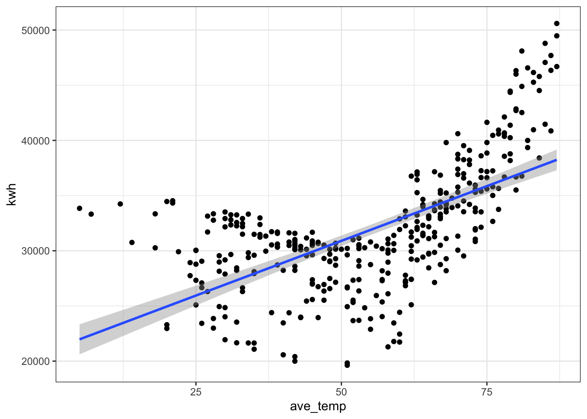
We’ve already established that a linear model is probably not a good fit to our full dataset. As a cautionary tale, let’s see what happens if we go ahead and fit a linear model to the full data anyway. The outcomes will help us develop an intution for what to look for in our diagnostic plots to tell that a model is not a good fit.
# where is the break point?
ggplot(daily_main, aes(x = ave_temp, y = kwh)) +
geom_point() +
theme_bw() +
geom_smooth(method = 'lm', formula = 'y ~ x', se = FALSE) # add a regression line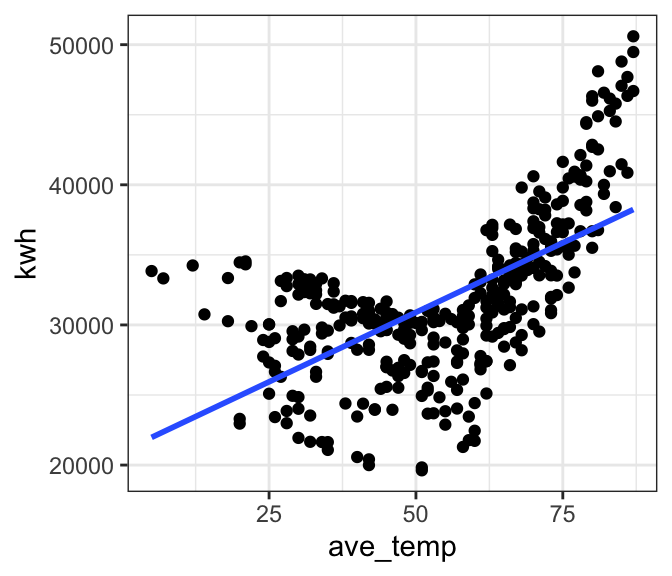
| Version | Author | Date |
|---|---|---|
| 0e3911f | maggiedouglas | 2026-03-23 |
mod_bad <- lm(formula = kwh ~ ave_temp,
data = daily_main)par(mfrow = c(1, 2)) # This code puts two plots in the same window
hist(mod_bad$residuals) # Histogram of residuals
plot(mod_bad, which = 2) # Quantile plot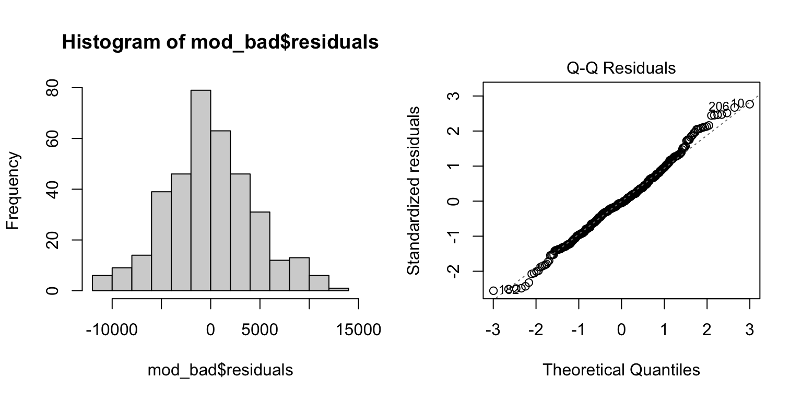
plot(mod_bad, which = 1) # Residuals vs. fits
acf(mod_bad$residuals) # Assess dependence between successive observations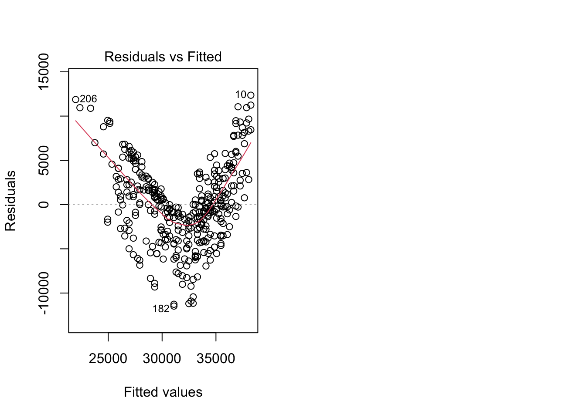
daily_main$resid <- mod_bad$residuals # store residuals in original dataset
daily_main$resid_sign <- ifelse(mod_bad$residuals < 0, "Negative","Positive")
# where is the break point?
ggplot(daily_main, aes(x = ave_temp, y = kwh)) +
geom_point(aes(color = resid_sign)) +
theme_bw() +
geom_smooth(method = 'lm', formula = 'y ~ x', se = FALSE) + # add a regression line
labs(color = "Residual")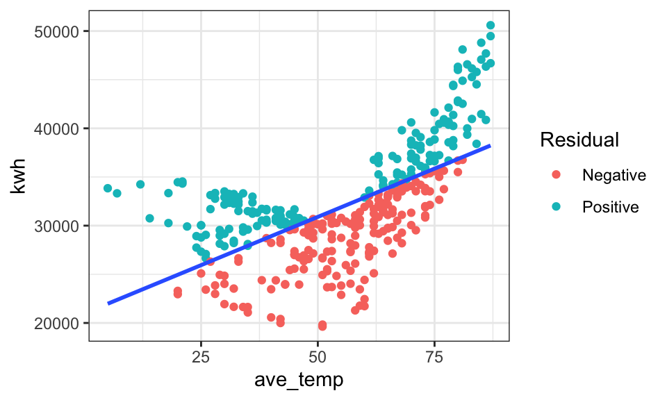
| Version | Author | Date |
|---|---|---|
| 0e3911f | maggiedouglas | 2026-03-23 |
For the sake of example, let’s look at the fitted model for our ‘bad’ model. Notice that there is no obvious warning message or other clue that this model is bad! It shows a significant positive relationship that explains ~39% of the variation in electricity use. This illustrates the importance of looking at our data and thinking critically about what we’re doing when we write R code.
summary(mod_bad) # Examine model terms + outcomes
Call:
lm(formula = kwh ~ ave_temp, data = daily_main)
Residuals:
Min 1Q Median 3Q Max
-11472.6 -2861.9 -244.4 2823.9 12360.0
Coefficients:
Estimate Std. Error t value Pr(>|t|)
(Intercept) 20983.2 754.0 27.83 <2e-16 ***
ave_temp 198.3 13.0 15.26 <2e-16 ***
---
Signif. codes: 0 '***' 0.001 '**' 0.01 '*' 0.05 '.' 0.1 ' ' 1
Residual standard error: 4496 on 363 degrees of freedom
Multiple R-squared: 0.3908, Adjusted R-squared: 0.3892
F-statistic: 232.9 on 1 and 363 DF, p-value: < 2.2e-16Okay, now let’s try and fit a more reasonable model. We will focus here on temperatures over 60 degrees, where the relationship appears linear.
# subset data > 60 degrees
daily_cool <- filter(daily_main, ave_temp > 60)
# fit the model for temps above 60
mod_cool <- lm(kwh ~ ave_temp, data = daily_cool)
# let's look at the residuals and fitted values
mod_cool_out <- get_regression_points(mod_cool)
head(mod_cool_out)# A tibble: 6 × 5
ID kwh ave_temp kwh_hat residual
<int> <dbl> <int> <dbl> <dbl>
1 1 33919. 69 34469. -550.
2 2 35412 73 36877. -1465.
3 3 38561. 78 39887. -1326.
4 4 42526. 81 41693. 833.
5 5 45794. 84 43499. 2296.
6 6 40862. 86 44703. -3840.# we can also extract the residuals from the model object
str(mod_cool)List of 12
$ coefficients : Named num [1:2] -7067 602
..- attr(*, "names")= chr [1:2] "(Intercept)" "ave_temp"
$ residuals : Named num [1:169] -550 -1465 -1326 833 2296 ...
..- attr(*, "names")= chr [1:169] "1" "2" "3" "4" ...
$ effects : Named num [1:169] -466667 -56289 -1185 1019 2526 ...
..- attr(*, "names")= chr [1:169] "(Intercept)" "ave_temp" "" "" ...
$ rank : int 2
$ fitted.values: Named num [1:169] 34469 36877 39887 41693 43499 ...
..- attr(*, "names")= chr [1:169] "1" "2" "3" "4" ...
$ assign : int [1:2] 0 1
$ qr :List of 5
..$ qr : num [1:169, 1:2] -13 0.0769 0.0769 0.0769 0.0769 ...
.. ..- attr(*, "dimnames")=List of 2
.. .. ..$ : chr [1:169] "1" "2" "3" "4" ...
.. .. ..$ : chr [1:2] "(Intercept)" "ave_temp"
.. ..- attr(*, "assign")= int [1:2] 0 1
..$ qraux: num [1:2] 1.08 1.02
..$ pivot: int [1:2] 1 2
..$ tol : num 1e-07
..$ rank : int 2
..- attr(*, "class")= chr "qr"
$ df.residual : int 167
$ xlevels : Named list()
$ call : language lm(formula = kwh ~ ave_temp, data = daily_cool)
$ terms :Classes 'terms', 'formula' language kwh ~ ave_temp
.. ..- attr(*, "variables")= language list(kwh, ave_temp)
.. ..- attr(*, "factors")= int [1:2, 1] 0 1
.. .. ..- attr(*, "dimnames")=List of 2
.. .. .. ..$ : chr [1:2] "kwh" "ave_temp"
.. .. .. ..$ : chr "ave_temp"
.. ..- attr(*, "term.labels")= chr "ave_temp"
.. ..- attr(*, "order")= int 1
.. ..- attr(*, "intercept")= int 1
.. ..- attr(*, "response")= int 1
.. ..- attr(*, ".Environment")=<environment: R_GlobalEnv>
.. ..- attr(*, "predvars")= language list(kwh, ave_temp)
.. ..- attr(*, "dataClasses")= Named chr [1:2] "numeric" "numeric"
.. .. ..- attr(*, "names")= chr [1:2] "kwh" "ave_temp"
$ model :'data.frame': 169 obs. of 2 variables:
..$ kwh : num [1:169] 33919 35412 38561 42526 45794 ...
..$ ave_temp: int [1:169] 69 73 78 81 84 86 84 84 86 87 ...
..- attr(*, "terms")=Classes 'terms', 'formula' language kwh ~ ave_temp
.. .. ..- attr(*, "variables")= language list(kwh, ave_temp)
.. .. ..- attr(*, "factors")= int [1:2, 1] 0 1
.. .. .. ..- attr(*, "dimnames")=List of 2
.. .. .. .. ..$ : chr [1:2] "kwh" "ave_temp"
.. .. .. .. ..$ : chr "ave_temp"
.. .. ..- attr(*, "term.labels")= chr "ave_temp"
.. .. ..- attr(*, "order")= int 1
.. .. ..- attr(*, "intercept")= int 1
.. .. ..- attr(*, "response")= int 1
.. .. ..- attr(*, ".Environment")=<environment: R_GlobalEnv>
.. .. ..- attr(*, "predvars")= language list(kwh, ave_temp)
.. .. ..- attr(*, "dataClasses")= Named chr [1:2] "numeric" "numeric"
.. .. .. ..- attr(*, "names")= chr [1:2] "kwh" "ave_temp"
- attr(*, "class")= chr "lm"head(mod_cool$residuals) 1 2 3 4 5 6
-549.9286 -1465.0255 -1326.0967 832.7806 2295.6578 -3840.2906 par(mfrow = c(1, 2)) # This code put two plots in the same window
hist(mod_cool$residuals) # Histogram of residuals
plot(mod_cool, which = 2) # Quantile plot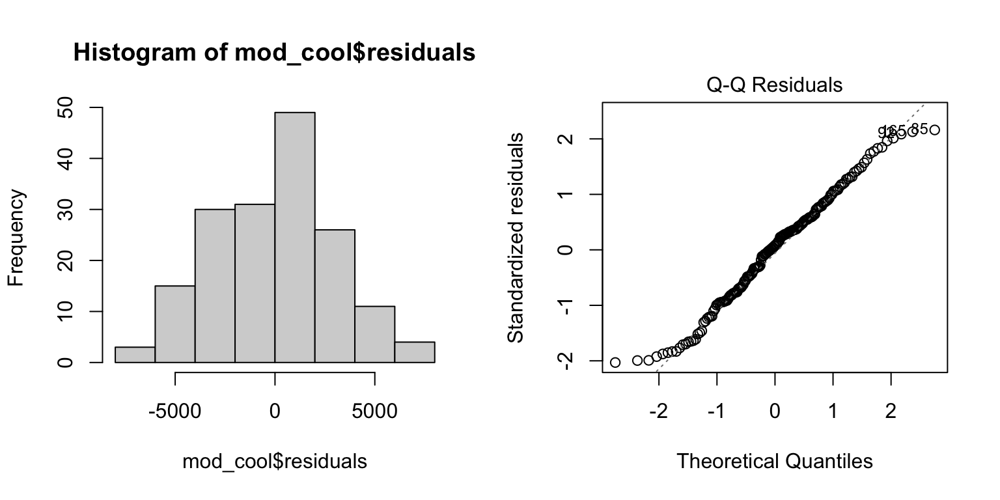
plot(mod_cool, which = 1) # Residuals vs. fits
acf(mod_cool$residuals) # Assess dependence between successive observations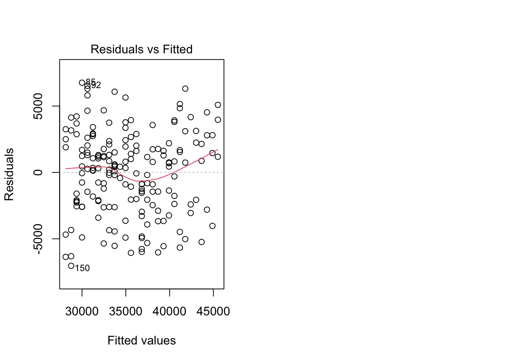
For temperatures above 60 degrees F, electricity use on the main
meter increased linearly with outdoor temperature (Figure 1, P
< 0.0001). The relationship was relatively strong, with temperature
explaining about two thirds of the variation in electricity use
(R2 = 0.67). The fitted regression line was:
kWh = -7067 + 602*Temp(F), suggesting that electricity use
increased by 602 kWh for each degree increase in temperature over this
range.
summary(mod_cool) # Examine model terms + outcomes
Call:
lm(formula = kwh ~ ave_temp, data = daily_cool)
Residuals:
Min 1Q Median 3Q Max
-6145.9 -2298.8 228.1 1940.4 6507.9
Coefficients:
Estimate Std. Error t value Pr(>|t|)
(Intercept) -7067.09 2329.13 -3.034 0.0028 **
ave_temp 601.97 32.47 18.540 <2e-16 ***
---
Signif. codes: 0 '***' 0.001 '**' 0.01 '*' 0.05 '.' 0.1 ' ' 1
Residual standard error: 3036 on 167 degrees of freedom
Multiple R-squared: 0.673, Adjusted R-squared: 0.6711
F-statistic: 343.7 on 1 and 167 DF, p-value: < 2.2e-16ggplot(daily_cool, aes(x = ave_temp, y = kwh)) +
geom_point(alpha = 0.6) +
geom_smooth(method = 'lm', formula = 'y ~ x', se = TRUE) + # add regression line
theme_bw() +
labs(x = "Temperature (degrees F)", y = "Electricity use (kWh)",
title = "Figure 1")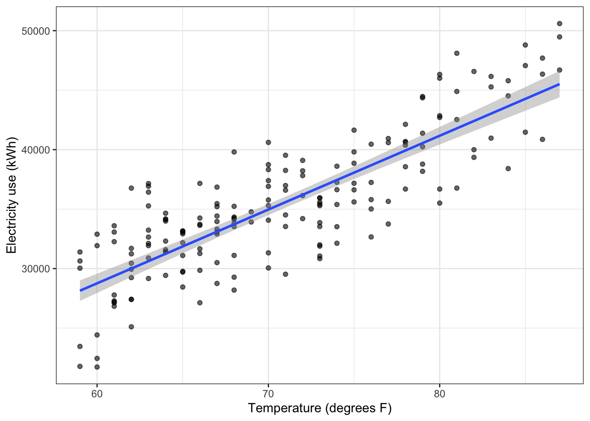
If we want to fit a single model that works across the entire range
of temperatures, we can consider a segmented regression. This is a
technique that essentially allows us to fit two linear models to our
data, with a break point identified by the analysis. The function to do
this is included in the segmented package.
lm(). Notice I’m using the full data again.segmented() function. This fits a ‘broken line’ regression.
The argument seg.Z identifies the variable over which we
want to break the regression. The argument psi sets our
initial guess for where the break point should be. The model will adjust
this break point to find the one that best fits the data.mod_full <- lm(kwh ~ ave_temp, data = daily_main)
mod_seg <- segmented(mod_full, seg.Z = ~ ave_temp, psi = 60)segmented()
function work a bit differently than model objects created by
lm(), so we will slightly adjust our approach to checking
assumptions and drop the Q-Q plot.par(mfrow = c(1, 2)) # This code put two plots in the same window
hist(mod_seg$residuals) # Histogram of residuals
plot(mod_seg$residuals) # Residuals vs. fits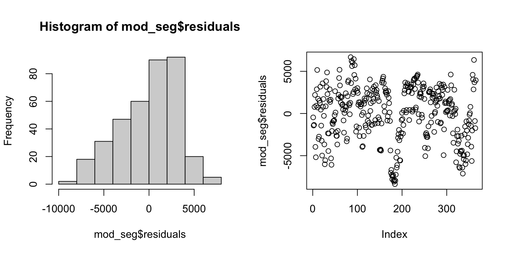
acf(mod_seg$residuals) # Assess dependence between successive observations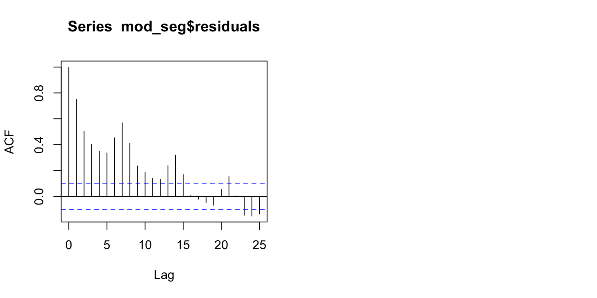
| Version | Author | Date |
|---|---|---|
| 0e3911f | maggiedouglas | 2026-03-23 |
Output from summary()
lm(), but with a few additional pieces of information.Additional information (using confint(),
intercept(), and slope() functions)
kWh = 31451 - 73.3*Temp(F)
kWh = -7994 + 614*Temp(F)
Figure 2 shows the relationship with the fitted segmented regression line.
segmented interact
with plotting functions, we need to use a different approach to
visualization, using the plot() function.summary(mod_seg, var.diff = TRUE) # Examine model terms + outcomes
***Regression Model with Segmented Relationship(s)***
Call:
segmented.lm(obj = mod_full, seg.Z = ~ave_temp, psi = 60)
Estimated Break-Point(s):
Est. St.Err
psi1.ave_temp 57.382 0.947
Coefficients of the linear terms:
Estimate Std. Error t value Pr(>|t|)
(Intercept) 31451.13 927.52 33.909 < 2e-16 ***
ave_temp -73.28 22.72 -3.225 0.00137 **
U1.ave_temp 687.42 37.47 18.347 NA
---
Signif. codes: 0 '***' 0.001 '**' 0.01 '*' 0.05 '.' 0.1 ' ' 1
Residual standard error 1 : 3336 on 174 degrees of freedom
Residual standard error 2 : 3169 on 183 degrees of freedom
Multiple R-Squared: 0.6866, Adjusted R-squared: 0.684
Boot restarting based on 6 samples. Last fit:
Convergence attained in 2 iterations (rel. change 2.6532e-15)confint(mod_seg) # Get confidence interval for break point Est. CI(95%).low CI(95%).up
psi1.ave_temp 57.3816 55.5189 59.2443intercept(mod_seg) # Extract the intercept for each equation$ave_temp
Est.
intercept1 31451.0
intercept2 -7994.2slope(mod_seg) # Extract the slopes for each equation$ave_temp
Est. St.Err. t value CI(95%).l CI(95%).u
slope1 -73.275 22.021 -3.3276 -116.58 -29.97
slope2 614.140 30.399 20.2030 554.36 673.93# plot original data with fit
plot(mod_seg, col = 'black', res = TRUE, conf.level = .95, shade = T,
res.col = adjustcolor("steelblue", alpha.f = 0.7), # set color of data + transparency
xlab = "Temperature (deg F)", ylab = "Electricity use (kWh)") # label axes
title("Figure 2", adj = 0) # how to set the title in base R plotting function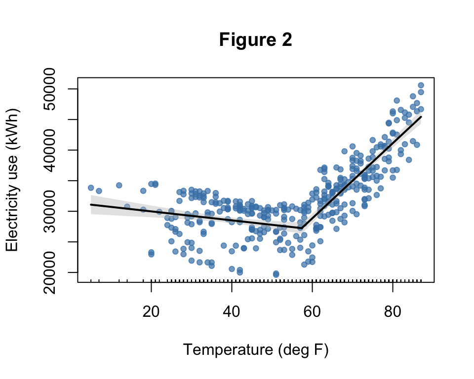
# main = "Figure 2", adj = 0) The model fit on temperatures >60 degrees F and the segmented regression both appeared to fit the data fairly well. For the model >60 degrees F, the fit to assumptions of normality and equal variance appeared to be reasonably met. A straight line captured the pattern in the data reasonably well. The residuals from the segmented regression appeared slightly skewed in distribution. One issue we will want to revisit is that it appears that the independence assumption is violated in both models, because the temporal autocorrelation plot shows correlation between observations near each other in time. Both models were highly significant and explained about two thirds of the variation in electricity use, suggesting that these models have value to understand electricity use patterns. Overall, the segmented model appears to provide a reasonable start for our model of the main meter, but can probably be improved by integrating additional explanatory variables.
sessionInfo()R version 4.5.2 (2025-10-31)
Platform: x86_64-apple-darwin20
Running under: macOS Ventura 13.7.8
Matrix products: default
BLAS: /Library/Frameworks/R.framework/Versions/4.5-x86_64/Resources/lib/libRblas.0.dylib
LAPACK: /Library/Frameworks/R.framework/Versions/4.5-x86_64/Resources/lib/libRlapack.dylib; LAPACK version 3.12.1
locale:
[1] en_US.UTF-8/en_US.UTF-8/en_US.UTF-8/C/en_US.UTF-8/en_US.UTF-8
time zone: America/New_York
tzcode source: internal
attached base packages:
[1] stats graphics grDevices utils datasets methods base
other attached packages:
[1] moderndive_0.7.0 tseries_0.10-60 segmented_2.2-1 nlme_3.1-168
[5] MASS_7.3-65 lubridate_1.9.5 forcats_1.0.1 stringr_1.6.0
[9] dplyr_1.2.0 purrr_1.2.1 readr_2.2.0 tidyr_1.3.2
[13] tibble_3.3.1 ggplot2_4.0.2 tidyverse_2.0.0
loaded via a namespace (and not attached):
[1] gtable_0.3.6 xfun_0.56 bslib_0.10.0
[4] formula.tools_1.7.1 lattice_0.22-7 tzdb_0.5.0
[7] quadprog_1.5-8 vctrs_0.7.1 tools_4.5.2
[10] generics_0.1.4 curl_7.0.0 xts_0.14.2
[13] pkgconfig_2.0.3 Matrix_1.7-4 RColorBrewer_1.1-3
[16] S7_0.2.1 lifecycle_1.0.5 compiler_4.5.2
[19] farver_2.1.2 git2r_0.36.2 janitor_2.2.1
[22] snakecase_0.11.1 httpuv_1.6.16 htmltools_0.5.9
[25] sass_0.4.10 yaml_2.3.12 later_1.4.8
[28] pillar_1.11.1 jquerylib_0.1.4 whisker_0.4.1
[31] cachem_1.1.0 tidyselect_1.2.1 digest_0.6.39
[34] stringi_1.8.7 labeling_0.4.3 operator.tools_1.6.3.1
[37] splines_4.5.2 rprojroot_2.1.1 fastmap_1.2.0
[40] grid_4.5.2 cli_3.6.5 magrittr_2.0.4
[43] broom_1.0.12 withr_3.0.2 backports_1.5.0
[46] scales_1.4.0 promises_1.5.0 timechange_0.4.0
[49] TTR_0.24.4 rmarkdown_2.30 quantmod_0.4.28
[52] otel_0.2.0 workflowr_1.7.2 zoo_1.8-15
[55] hms_1.1.4 evaluate_1.0.5 knitr_1.51
[58] mgcv_1.9-3 rlang_1.1.7 Rcpp_1.1.1
[61] glue_1.8.0 infer_1.1.0 rstudioapi_0.18.0
[64] jsonlite_2.0.0 R6_2.6.1 fs_1.6.7